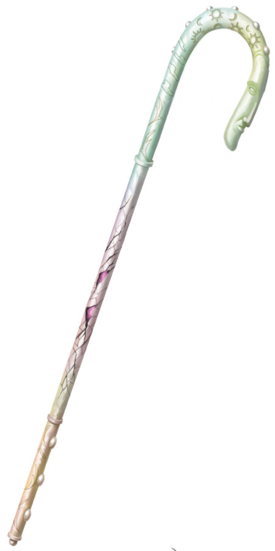

Crosse de Rao
[ Crook of Rao ]
Objet merveilleux, artéfact (nécessite un lien)
Il y a bien longtemps, le paisible dieu Rao créa un outil pour protéger ses premiers fidèles contre les maux des plans inférieurs. Puis les éons passèrent, et les mortels développèrent leurs propres moyens de défense, rendant obsolète la crosse, qui fut oubliée. Récemment, toutefois, la montée en puissance d'Iggwilv (l'un des noms de la magicienne Tasha) fit sortir de sa retraite cet ancien artefact afin de pouvoir l'arrêter. Celle-ci parvint cependant à atteindre la crosse, lui inoculant une malédiction perfide et compromettant la possibilité d'utiliser l'objet contre elle à l'avenir. La Crosse de Rao fut alors de nouveau oubliée, puis trouvée à plusieurs occasions, mais elle avait perdu sa gloire passée. Que les porteurs successifs réalisent ou non toute la menace qu'elle représente, peu de gens prennent le risque d'utiliser la Crosse de Rao, car chaque utilisation pourrait bien être la dernière.
Propriétés aléatoires. Cet artefact possède un certain nombre de propriétés déterminées aléatoirement :
• 2 propriétés bénéfiques mineures
• 1 propriété bénéfique majeure
• 1 propriété néfaste mineure
Sorts. La crosse possède 6 charges. Quand vous la tenez, vous pouvez utiliser une action pour dépenser 1 ou plusieurs de ses charges pour jeter l'un des sorts suivants (DD 18) depuis la crosse : aura de vie (2 charges), aura de pureté (2 charges), bannissement (1 charge), lueur d'espoir (1 charge), soins de groupe (3 charges). La crosse récupère 1d6 charges dépensées chaque jour à l'aube.
Bannissement absolu. En étant lié à la crosse et en la tenant en main, vous pouvez passer 10 minutes pour renvoyer dans leur plan d'origine tous les fiélons, sauf les plus puissants d'entre eux, dans un rayon de 1,5 km autour de vous. Tout fiélon avec un FP de 19 ou plus n'est pas affecté. Chaque fiélon banni est renvoyé dans son plan d'origine et ne peut pas retourner dans le plan dont la Crosse de Rao l'a banni pendant 100 ans.
Matrice défaillante. Chaque fois que la capacité Bannissement absolu est utilisée, ou lorsque la dernière charge est dépensée, lancez un d100 sur la table ci-dessous. Toutes les créatures invoquées par de cet effet apparaissent dans des espaces inoccupés aléatoires à moins de 18 mètres de vous et ne sont pas sous votre contrôle.
La malédiction d'Iggwilv. Si la crosse a été utilisée pour la dernière fois contre Iggwilv, la Reine-Sorcière a maudit l'artefact, infectant sa matrice magique. Au fil des ans, cette malédiction s'est propagée au sein de celle-ci, menaçant de pervertir violemment son ancienne magie. Si cela se produit, la Crosse de Rao, telle qu'elle est actuellement connue, est détruite, sa matrice magique s'inversant et explosant en un portail de 15 mètres de diamètre. Ce portail fonctionne comme un sort de portail permanent lancé par Iggwilv elle-même. La porte, une fois par tour et à l'initiative 20, prononce alors à haute et intelligible voix le nom d'un fiélon de la voix de Iggwilv, jusqu'à ce que la porte ait appelé tous les fiélons ayant été bannis par la Crosse de Rao. Si le fiélon existe toujours, il traverse la porte. Cela dure dix-huit ans, à l'issue de laquelle la porte devient un portail permanent à destination de Pazunia, la première strate des Abysses.
Détruire ou réparer la crosse. Que vous souhaitiez détruire l'artefact ou le réparer, il faudra vous rendre au Mont Céleste pour obtenir une larme du toujours paisible dieu Rao. Un des moyens de faire pleurer l'impassible divinité serait de lui présenter l'âme de son premier fidèle, parti chercher des révélations au loin dans le multivers il y a bien longtemps. La crosse se dissout si elle reste immergée dans la larme du dieu pendant un an et un jour. Si vous la lavez dans la larme quotidiennement pendant 30 jours, la crosse perd sa propriété Matrice défaillante.
Propriétés aléatoires. Cet artefact possède un certain nombre de propriétés déterminées aléatoirement :
• 2 propriétés bénéfiques mineures
• 1 propriété bénéfique majeure
• 1 propriété néfaste mineure
Sorts. La crosse possède 6 charges. Quand vous la tenez, vous pouvez utiliser une action pour dépenser 1 ou plusieurs de ses charges pour jeter l'un des sorts suivants (DD 18) depuis la crosse : aura de vie (2 charges), aura de pureté (2 charges), bannissement (1 charge), lueur d'espoir (1 charge), soins de groupe (3 charges). La crosse récupère 1d6 charges dépensées chaque jour à l'aube.
Bannissement absolu. En étant lié à la crosse et en la tenant en main, vous pouvez passer 10 minutes pour renvoyer dans leur plan d'origine tous les fiélons, sauf les plus puissants d'entre eux, dans un rayon de 1,5 km autour de vous. Tout fiélon avec un FP de 19 ou plus n'est pas affecté. Chaque fiélon banni est renvoyé dans son plan d'origine et ne peut pas retourner dans le plan dont la Crosse de Rao l'a banni pendant 100 ans.
Matrice défaillante. Chaque fois que la capacité Bannissement absolu est utilisée, ou lorsque la dernière charge est dépensée, lancez un d100 sur la table ci-dessous. Toutes les créatures invoquées par de cet effet apparaissent dans des espaces inoccupés aléatoires à moins de 18 mètres de vous et ne sont pas sous votre contrôle.
| d100 | Effet |
|---|---|
| 01-25 | Un portail vers un plan aléatoire s'ouvre. Le portail se referme au bout de 5 minutes. |
| 26-45 | 2d4 diablotins et 2d4 quasits apparaissent. |
| 46-60 | 1d8 succubes/incubes apparaissent. |
| 61-70 | 1d10 diables barbelés et 1d10 vrocks apparaissent. |
| 71-80 | 1 arcanoloth, 1 guenaude nocturne et 1 rakshasa apparaissent. |
| 81-85 | 1 diable gelé et 1 marilith apparaissent. |
| 86-90 | 1 balor et 1 diantrefosse apparaissent. À la discrétion du MD, un portail s'ouvre sur la présence d'un Archidiable ou d'un Seigneur Démon, puis se ferme après 5 minutes. |
| 91-00 | La malédiction d'Iggwilv (voir ci-dessous la malédiction d'Iggwilv). |
La malédiction d'Iggwilv. Si la crosse a été utilisée pour la dernière fois contre Iggwilv, la Reine-Sorcière a maudit l'artefact, infectant sa matrice magique. Au fil des ans, cette malédiction s'est propagée au sein de celle-ci, menaçant de pervertir violemment son ancienne magie. Si cela se produit, la Crosse de Rao, telle qu'elle est actuellement connue, est détruite, sa matrice magique s'inversant et explosant en un portail de 15 mètres de diamètre. Ce portail fonctionne comme un sort de portail permanent lancé par Iggwilv elle-même. La porte, une fois par tour et à l'initiative 20, prononce alors à haute et intelligible voix le nom d'un fiélon de la voix de Iggwilv, jusqu'à ce que la porte ait appelé tous les fiélons ayant été bannis par la Crosse de Rao. Si le fiélon existe toujours, il traverse la porte. Cela dure dix-huit ans, à l'issue de laquelle la porte devient un portail permanent à destination de Pazunia, la première strate des Abysses.
Détruire ou réparer la crosse. Que vous souhaitiez détruire l'artefact ou le réparer, il faudra vous rendre au Mont Céleste pour obtenir une larme du toujours paisible dieu Rao. Un des moyens de faire pleurer l'impassible divinité serait de lui présenter l'âme de son premier fidèle, parti chercher des révélations au loin dans le multivers il y a bien longtemps. La crosse se dissout si elle reste immergée dans la larme du dieu pendant un an et un jour. Si vous la lavez dans la larme quotidiennement pendant 30 jours, la crosse perd sa propriété Matrice défaillante.
Tasha´s Cauldron of Everything
